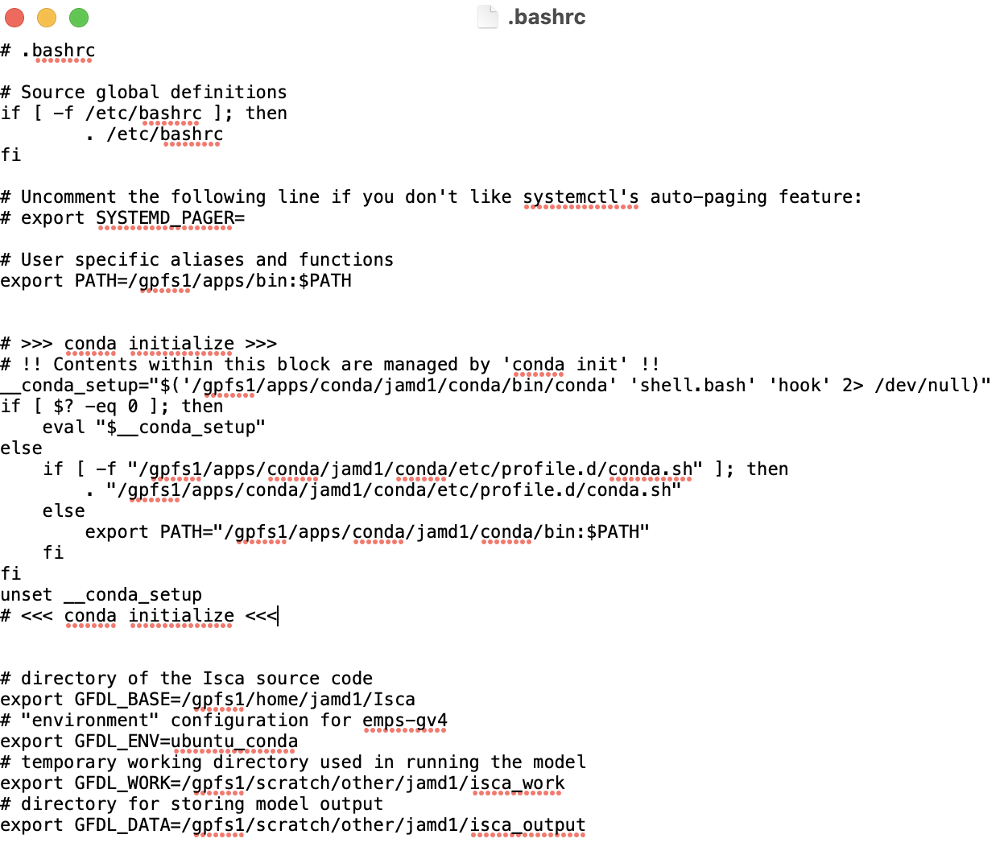
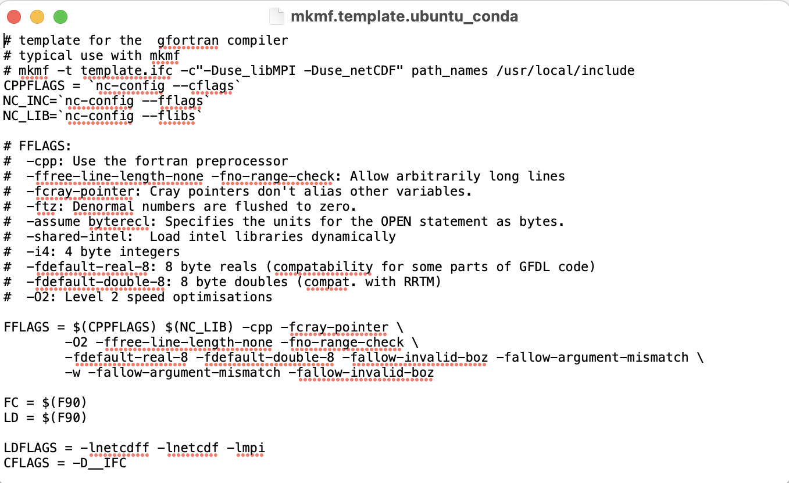
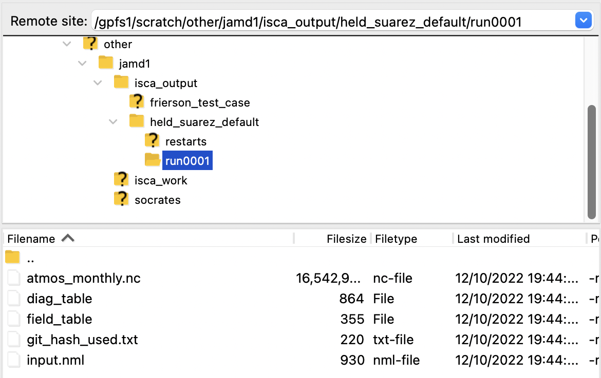

Getting Started
Isca needs to be run on a powerful computer, so to use it, you first need to ssh
into a high performance computer e.g. kennedy.
Installation
Copy Source Code (Step 2)
- Once logged into the high performance computer, run
git clone https://github.com/ExeClim/Isca - Then change the current directory
cd Isca
Create CONDA environment (Step 3)
- In terminal, run
conda env create -f ci/environment-py3.9.yml. This takes around 5 minutes. -
Then, run
chmod u+x /gpfs1/apps/conda/$USER/conda/envs/*/bin/*to make sure it is using the correct python version. -
Now you should be able to activate the CONDA environment:
conda activate isca_env. I would probably double check it is using the correct python version by runningwhich python. It should return/gpfs1/apps/conda/jamd1/conda/envs/isca_env/bin/python.
Install in development mode (Step 4)
- Change directory to where the setup.py file is:
cd /gpfs1/home/jamd1/Isca/src/extra/python - Install the
iscapython module in development mode:pip install -e .
Set environment and where Isca saves data
- Using FileZilla, create the directories /gpfs1/scratch/other/$USER/isca_work and /gpfs1/scratch/other/$USER/isca_output.
- Add the following to the /gpfs1/home/jamd1/.bashrc file, to indicate the Isca environment and where to
save data.
# directory of the Isca source code export GFDL_BASE=/gpfs1/home/$USER/Isca # "environment" configuration for emps-gv4 export GFDL_ENV=ubuntu_conda # temporary working directory used in running the model export GFDL_WORK=/gpfs1/scratch/other/$USER/isca_work # directory for storing model output export GFDL_DATA=/gpfs1/scratch/other/$USER/isca_output - The full .bashrc file now looks like this: 
- Exit the
sshand log back in for the new .bashrc script to take effect. - This is close to the Compiling for the first time section.
Add Fortran compiler flags
- Check version of
gfortraninstalled usingconda list -n isca_env:gfortran 10.4.0 h0c96582_10 conda-forge gfortran_impl_linux-64 10.4.0 h44b2e72_16 conda-forge gfortran_linux-64 10.4.0 h69d5af5_10 conda-forge - If version is 10 or greater, the file
/gpfs1/home/$USER/Isca/src/extra/python/isca/templates/mkmf.template.ubuntu_conda
needs to be changed, with the following:
-w -fallow-argument-mismatch -fallow-invalid-bozadded to the existing FFlags. - The final file should look like this: 
Held Suarez
A simple experiment to run to check that the installation has worked is the Held Suarez experiment.
To run this, you can do the following:
- Login to kennedy.
- Run
conda activate isca_envto activate the Isca CONDA environment. - Create the following script, titled
held_suarez_run.sh, and transfer it to a suitable location on kennedy.#!/bin/bash #SBATCH --job-name=held_suarez_test #SBATCH --output="held_suarez_test_output.txt" #SBATCH --error="held_suarez_test_error.txt" #SBATCH --time=02:00:00 # maximum walltime for the job #SBATCH --nodes=1 # specify number of nodes #SBATCH --ntasks-per-node=16 # specify number of processors per node #SBATCH --mail-type=END # send email at job completion #SBATCH --mail-user=$USER@st-andrews.ac.uk # email address #SBATCH --partition=debug # queue to run on #SBATCH --nodelist=kennedy20 # node to run on python $GFDL_BASE/exp/test_cases/held_suarez/held_suarez_test_case.py- This will save the things printed to the console in
held_suarez_test_error.txt, which will just be added to the same directory that the script is in. You may want to change this to put it in another location. - This will use the debug queue as it should only take around 20 minutes to run.
- This will save the things printed to the console in
- Submit the script:
sbatch held_suarez_run.sh(make sure you are in the same directory as the file first).
As well as the held_suarez_test_output.txt and held_suarez_test_error.txt files, this should also generate
some output data in the folder /gpfs1/scratch/jamd1/isca_output/held_suarez_default/run0001:

Running a General Experiment
Required Files
To run a general experiment, you need to create two files, a namelist nml file specifying the configuration options for the experiment and a diagnostic table file, specifying what diagnostics to save for the experiment.
The corresponding files for the Held Suarez experiment are given below:
! This section gives info to give to SLURM when running experiment
&experiment_details
name = 'held_suarez' ! Name of experiment
input_dir = '/gpfs1/home/jamd1/Isca/jobs/held_suarez'
n_months_total = 12
n_months_job = 12
n_nodes = 1
n_cores = 16
resolution = 'T42'
partition = 'debug' ! Queue to submit job to (Slurm info).
overwrite_data = .false.
compile = .false.
max_walltime = '01:00:00'
delete_restart_files = .true.
nodelist = 'kennedy20'
/
&atmosphere_nml
idealized_moist_model = .false.
/
&diag_manager_nml
mix_snapshot_average_fields = .false.
/
&fms_io_nml
fileset_write = 'single'
threading_write = 'single'
/
&fms_nml
domains_stack_size = 600000
/
&hs_forcing_nml
delh = 60.0
delv = 10.0
do_conserve_energy = .true.
eps = 0.0
ka = -40.0
kf = -1.0
ks = -4.0
sigma_b = 0.7
t_strat = 200.0
t_zero = 315.0
/
&main_nml
calendar = 'thirty_day'
current_date = 2000, 1, 1, 0, 0, 0
days = 30
dt_atmos = 600
/
&spectral_dynamics_nml
damping_order = 4
exponent = 7.5
initial_sphum = 0.0
reference_sea_level_press = 100000.0
scale_heights = 6.0
surf_res = 0.5
valid_range_t = 100.0, 800.0
vert_coord_option = 'uneven_sigma'
water_correction_limit = 20000.0
lon_max = 256
lat_max = 128
num_fourier = 85
num_spherical = 86
num_levels = 25
/
"FMS Model results"
0001 1 1 0 0 0
# = output files =
# file_name, output_freq, output_units, format, time_units, long_name
"atmos_monthly", 30, "days", 1, "days", "time",
# = diagnostic field entries =
# module_name, field_name, output_name, file_name, time_sampling, time_avg, other_opts, precision
"dynamics", "ps", "ps", "atmos_monthly", "all", .true., "none", 2,
"dynamics", "bk", "bk", "atmos_monthly", "all", .false., "none", 2,
"dynamics", "pk", "pk", "atmos_monthly", "all", .false., "none", 2,
"dynamics", "ucomp", "ucomp", "atmos_monthly", "all", .true., "none", 2,
"dynamics", "vcomp", "vcomp", "atmos_monthly", "all", .true., "none", 2,
"dynamics", "temp", "temp", "atmos_monthly", "all", .true., "none", 2,
"dynamics", "vor", "vor", "atmos_monthly", "all", .true., "none", 2,
"dynamics", "div", "div", "atmos_monthly", "all", .true., "none", 2,
The namelist_hs.nml file specifies all the
namelist options
for the experiment. There is also an additional experiment_details
section which contains information on how to run
the simulation.
nml files
If a parameter is a boolean e.g. overwrite_data or compile, the format must be .false. or .true..
If a parameter is a string e.g. max_walltime, resolution or name then quotation marks ('') must be used
i.e. name = 'held_suarez'.
! indicates a comment and will not be read in.
The diag_table_hs file specifies all the
diagnostics
to save to the output directory.
Running
To run a general experiment, download the isca_tools folder from the
Github repository and transfer it
to your home directory on kennedy.
Once you have done this, and have created a namelist file with path
isca_jobs/experiment/namelist.nml and diagnostic table file with path isca_jobs/experiment/diag_table, you can
do the following:
- Login to kennedy.
- Run
conda activate isca_envto activate the Isca CONDA environment. - Run:
python isca_tools isca_jobs/experiment/namelist.nml isca_jobs/experiment/diag_table True
The True in the above line of code indicates that the jobs should be submitted to Slurm. If this third parameter
is False or not given, then it won't use Slurm but just run on kennedy.
This may be useful for debugging small jobs.
What this last line of code does is call the function
run_experiment.
Rather than submitting the job using terminal, you can also do it through running the following python script:
import os
from isca_tools import run_experiment
jobs_dir = os.path.join(os.environ['HOME'], 'isca_jobs') # all jobs saved here
exp_dir = os.path.join(jobs_dir, 'experiment') # specific experiment - CHANGE FOR EACH EXPERIMENT
namelist_file = os.path.join(exp_dir, 'namelist.nml')
diag_table_file = os.path.join(exp_dir, 'diag_table')
run_experiment(namelist_file, diag_table_file, slurm=True)
Output Data
This will save data to the folder /gpfs1/scratch/jamd1/isca_output/name/ where name is the value of name
indicated in the experiment_details section of the namelist.nml file.
There will be a folder for each month e.g. run0003 will contain the data for the third month.
If Slurm is used, there will also be a folder titled console_output. This which will contain a file titled error1.txt
containing all the stuff Isca printed to the console for the job starting on month 1, as well as a file
titled time1.txt, which contains the time taken for that job to run. If the experiment was split over
multiple jobs, there will be multiple error.txt and time.txt files, each indexed with the month
that they started on.